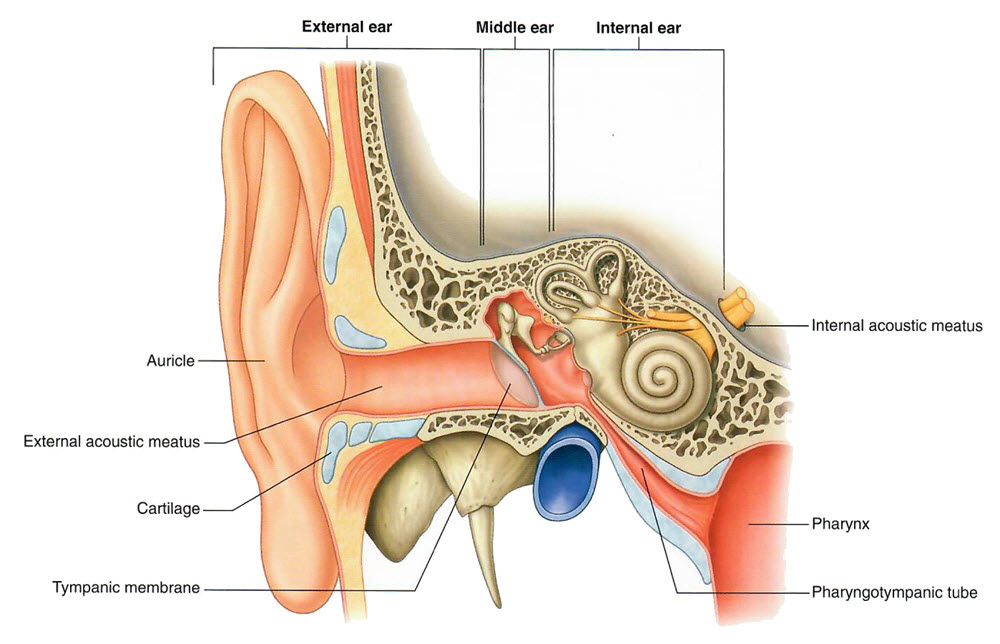

Neurology Lab 7 - Module 1 - External, Middle and Internal Ear: Page 3 of 3
×

|  |
| Tap on image to enlarge |
| With the below drawing as a guide, use the Highlight tool, to identify the components of the external ear and middle ear. |
The temporal bone encases the inner ear. What are the inner ear components? |
|
|
Semicircular canals and the cochlea. |
|
Identify the pharyngotympanic tube on the cadaver. What is the other name for this tube? |
|
|
Eustachian tube. |
|
What is the function of this tube? |
|
|
Establish atmospheric equalibrium with the middle ear and our enviroment. |
|
| Notice that the jugular vein passes just beneath the temporal bone. Demonstrate this by adding the right internal jugular vein using the Anatomy icon. |
What vessels supply the middle ear? What blood vessel supplies the inner ear? |
|
|
Middle ear = Tympanic branch of the maxillary artery and the mastoid branch of the occipital or posterior auricular arteries. Venous drainage is to the pterygoid plexus and superior petrosal sinus. |
|